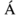
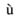

Introduction to DOM
The Document Object Model (DOM) is a programming interface for HTML and XML(Extensible markup language) documents. It defines the logical structure of documents and the way a document is accessed and manipulated.
Note: It is called a Logical structure because DOM doesn’t specify any relationship between objects.
DOM is a way to represent the webpage in a structured hierarchical way so that it will become easier for programmers and users to glide through the document. With DOM, we can easily access and manipulate tags, IDs, classes, Attributes, or Elements using commands or methods provided by the Document object.
Why DOM is required
HTML is used to structure the web pages and Javascript is used to add behavior to our web pages. When an HTML file is loaded into the browser, the javascript can not understand the HTML document directly. So, a corresponding document is created(DOM). DOM is basically the representation of the same HTML document but in a different format with the use of objects. Javascript interprets DOM easily i.e javascript can not understand the tags (<h1> H </h1>) in HTML document but can understand object h1 in DOM. Now, Javascript can access each of the objects (h1, p, etc) by using different functions.
Structure of DOM
DOM can be thought of as a Tree or Forest(more than one tree). The term structure model is sometimes used to describe the tree-like representation of a document. One important property of DOM structure models is structural isomorphism: if any two DOM implementations are used to create a representation of the same document, they will create the same structure model, with precisely the same objects and relationships.
Properties of DOM
Let’s see the properties of the document object that can be accessed and modified by the document object.
- Window Object: Window Object is always at top of the hierarchy.
- Document object: When an HTML document is loaded into a window, it becomes a document object.
- Form Object: It is represented by form tags.
- Link Object: It is represented by link tags.
- Anchor Object: It is represented by a href tags.
- Form Control Elements:: Form can have many control elements such as text fields, buttons, radio buttons, and checkboxes, etc.
Methods of Document Object:
- write(“string”): Writes the given string on the document.
- getElementById(): returns the element having the given id value.
- getElementsByName(): returns all the elements having the given name value.
- getElementsByTagName(): returns all the elements having the given tag name.
- getElementsByClassName(): returns all the elements having the given class name.
Levels of DOM
- Level 0: Provides a low-level set of interfaces.
- Level 1: DOM level 1 can be described in two parts: CORE and HTML.
- CORE provides low-level interfaces that can be used to represent any structured document.
- HTML provides high-level interfaces that can be used to represent HTML documents.
- Level 2: consists of six specifications: CORE2, VIEWS, EVENTS, STYLE, TRAVERSAL, and RANGE.
- CORE2: extends the functionality of CORE specified by DOM level 1.
- VIEWS: views allows programs to dynamically access and manipulate the content of the document.
- EVENTS: Events are scripts that are either executed by the browser when the user reacts to the web page.
- STYLE: allows programs to dynamically access and manipulate the content of style sheets.
- TRAVERSAL: This allows programs to dynamically traverse the document.
- RANGE: This allows programs to dynamically identify a range of content in the document.
- Level 3: consists of five different specifications: CORE3, LOAD and SAVE, VALIDATION, EVENTS, and XPATH.
- CORE3: extends the functionality of CORE specified by DOM level 2.
- LOAD and SAVE: This allows the program to dynamically load the content of the XML document into the DOM document and save the DOM Document into an XML document by serialization.
- VALIDATION: This allows the program to dynamically update the content and structure of the document while ensuring the document remains valid.
- EVENTS: extends the functionality of Events specified by DOM Level 2.
- XPATH: XPATH is a path language that can be used to access the DOM tree.
The Document Object
When an HTML document is loaded into a web browser, it becomes a document object.
The document object is the root node of the HTML document and the "owner" of all other nodes: (element nodes, text nodes, attribute nodes, and comment nodes).
The document object provides properties and methods to access all node objects, from within JavaScript.
The document object is accessed with:
window.document or just document
Document Object Properties and Methods
The following properties and methods can be used on HTML documents:
| Property / Method | Description |
|---|---|
| activeElement | Returns the currently focused element in the document |
| addEventListener() | Attaches an event handler to the document |
| adoptNode() | Adopts a node from another document |
| anchors | Deprecated |
| applets | Deprecated |
| baseURI | Returns the absolute base URI of a document |
| body | Sets or returns the document's body (the <body> element) |
| close() | Closes the output stream previously opened with document.open() |
| cookie | Returns all name/value pairs of cookies in the document |
| charset | Deprecated |
| characterSet | Returns the character encoding for the document |
| createAttribute() | Creates an attribute node |
| createComment() | Creates a Comment node with the specified text |
| createDocumentFragment() | Creates an empty DocumentFragment node |
| createElement() | Creates an Element node |
| createEvent() | Creates a new event |
| createTextNode() | Creates a Text node |
| defaultView | Returns the window object associated with a document, or null if none is available. |
| designMode | Controls whether the entire document should be editable or not. |
| doctype | Returns the Document Type Declaration associated with the document |
| documentElement | Returns the Document Element of the document (the <html> element) |
| >documentMode | Returns the mode used by the browser to render the document |
| documentURI | Sets or returns the location of the document |
| domain | Returns the domain name of the server that loaded the document |
| domConfig | Deprecated |
| embeds | Returns a collection of all <embed> elements the document |
| execCommand() | Invokes the specified clipboard operation on the element currently having focus. |
| forms | Returns a collection of all <form> elements in the document |
| fullscreenElement | Returns the current element that is displayed in fullscreen mode |
| fullscreenEnabled() | Returns a Boolean value indicating whether the document can be viewed in fullscreen mode |
| getElementById() | Returns the element that has the ID attribute with the specified value |
| getElementsByClassName() | Returns a HTMLCollection containing all elements with the specified class name |
| getElementsByName() | Returns a HTMLCollection containing all elements with a specified name |
| getElementsByTagName() | Returns a HTMLCollection containing all elements with the specified tag name |
| hasFocus() | Returns a Boolean value indicating whether the document has focus |
| head | Returns the <head> element of the document |
| images | Returns a collection of all <img> elements in the document |
| implementation | Returns the DOMImplementation object that handles this document |
| importNode() | Imports a node from another document |
| inputEncoding | Deprecated |
| lastModified | Returns the date and time the document was last modified |
| links | Returns a collection of all <a> and <area> elements in the document that have a href attribute |
| normalize() | Removes empty Text nodes, and joins adjacent nodes |
| normalizeDocument() | Removes empty Text nodes, and joins adjacent nodes |
| open() | Opens an HTML output stream to collect output from document.write() |
| querySelector() | Returns the first element that matches a specified CSS selector(s) in the document |
| querySelectorAll() | Returns a static NodeList containing all elements that matches a specified CSS selector(s) in the document |
| readyState | Returns the (loading) status of the document |
| referrer | Returns the URL of the document that loaded the current document |
| removeEventListener() | Removes an event handler from the document (that has been attached with the addEventListener() method) |
| renameNode() | Renames the specified node |
| scripts | Returns a collection of <script> elements in the document |
| strictErrorChecking | Sets or returns whether error-checking is enforced or not |
| title | Sets or returns the title of the document |
| URL | Returns the full URL of the HTML document |
| write() | Writes HTML expressions or JavaScript code to a document |
| writeln() | Same as write(), but adds a newline character after each statement |
Introduction to XML
XML stands for Extensible Markup Language. It is a text-based markup language derived from Standard Generalized Markup Language (SGML).
XML tags identify the data and are used to store and organize the data, rather than specifying how to display it like HTML tags, which are used to display the data. XML is not going to replace HTML in the near future, but it introduces new possibilities by adopting many successful features of HTML.
There are three important characteristics of XML that make it useful in a variety of systems and solutions −
- XML is extensible − XML allows you to create your own self-descriptive tags, or language, that suits your application.
- XML carries the data, does not present it − XML allows you to store the data irrespective of how it will be presented.
- XML is a public standard − XML was developed by an organization called the World Wide Web Consortium (W3C) and is available as an open standard.
XML Usage
A short list of XML usage says it all −
-
XML can work behind the scene to simplify the creation of HTML documents for large web sites.
-
XML can be used to exchange the information between organizations and systems.
-
XML can be used for offloading and reloading of databases.
-
XML can be used to store and arrange the data, which can customize your data handling needs.
-
XML can easily be merged with style sheets to create almost any desired output.
-
Virtually, any type of data can be expressed as an XML document.
Is XML a Programming Language?
A programming language consists of grammar rules and its own vocabulary which is used to create computer programs. These programs instruct the computer to perform specific tasks. XML does not qualify to be a programming language as it does not perform any computation or algorithms. It is usually stored in a simple text file and is processed by special software that is capable of interpreting XML.
XML - Syntax
Following is a complete XML document −
<?xml version = "1.0"?>
<contact-info>
<name>Tanmay Patil</name>
<company>TutorialsPoint</company>
<phone>(011) 123-4567</phone>
</contact-info>
There are two kinds of information in the above example −
- Markup, like <contact-info>
- The text, or the character data, Tutorials Point and (040) 123-4567.
The following diagram depicts the syntax rules to write different types of markup and text in an XML document.
XML - Declaration
XML declaration contains details that prepare an XML processor to parse the XML document. It is optional, but when used, it must appear in the first line of the XML document.
Syntax
Following syntax shows XML declaration −
<?xml
version = "version_number"
encoding = "encoding_declaration"
standalone = "standalone_status"
?>
Each parameter consists of a parameter name, an equals sign (=), and parameter value inside a quote. Following table shows the above syntax in detail −
| Parameter | Parameter_value | Parameter_description |
|---|---|---|
| Version | 1.0 | Specifies the version of the XML standard used. |
| Encoding | UTF-8, UTF-16, ISO-10646-UCS-2, ISO-10646-UCS-4, ISO-8859-1 to ISO-8859-9, ISO-2022-JP, Shift_JIS, EUC-JP | It defines the character encoding used in the document. UTF-8 is the default encoding used. |
| Standalone | yes or no | It informs the parser whether the document relies on the information from an external source, such as external document type definition (DTD), for its content. The default value is set to no. Setting it to yes tells the processor there are no external declarations required for parsing the document. |
Rules
An XML declaration should abide with the following rules −
-
If the XML declaration is present in the XML, it must be placed as the first line in the XML document.
-
If the XML declaration is included, it must contain version number attribute.
-
The Parameter names and values are case-sensitive.
-
The names are always in lower case.
-
The order of placing the parameters is important. The correct order is: version, encoding and standalone.
-
Either single or double quotes may be used.
-
The XML declaration has no closing tag i.e. </?xml>
XML Declaration Examples
Following are few examples of XML declarations:
XML declaration with no parameters −
<?xml >
XML declaration with version definition −
<?xml version = "1.0">
XML declaration with all parameters defined −
<?xml version = "1.0" encoding = "UTF-8" standalone = "no" ?>
XML declaration with all parameters defined in single quotes −
<?xml version = '1.0' encoding = 'iso-8859-1' standalone = 'no' ?>
XML Text
The names of XML-elements and XML-attributes are case-sensitive, which means the name of start and end elements need to be written in the same case. To avoid character encoding problems, all XML files should be saved as Unicode UTF-8 or UTF-16 files.
Whitespace characters like blanks, tabs and line-breaks between XML-elements and between the XML-attributes will be ignored.
Some characters are reserved by the XML syntax itself. Hence, they cannot be used directly. To use them, some replacement-entities are used, which are listed below −
| Not Allowed Character | Replacement Entity | Character Description |
|---|---|---|
| < | < | less than |
| > | > | greater than |
| & | & | ampersand |
| ' | ' | apostrophe |
| " | " | quotation mark |
XML - Documents
An XML document is a basic unit of XML information composed of elements and other markup in an orderly package. An XML document can contains wide variety of data. For example, database of numbers, numbers representing molecular structure or a mathematical equation.
XML Document Example
A simple document is shown in the following example −
<?xml version = "1.0"?>
<contact-info>
<name>Tanmay Patil</name>
<company>TutorialsPoint</company>
<phone>(011) 123-4567</phone>
</contact-info>
The following image depicts the parts of XML document.
Document Prolog Section
Document Prolog comes at the top of the document, before the root element. This section contains −
- XML declaration
- Document type declaration
Document Elements Section
Document Elements are the building blocks of XML. These divide the document into a hierarchy of sections, each serving a specific purpose. You can separate a document into multiple sections so that they can be rendered differently, or used by a search engine. The elements can be containers, with a combination of text and other elements.
XML - Tags
XML tags form the foundation of XML. They define the scope of an element in XML. They can also be used to insert comments, declare settings required for parsing the environment, and to insert special instructions.
We can broadly categorize XML tags as follows −
Start Tag
The beginning of every non-empty XML element is marked by a start-tag. Following is an example of start-tag −
<address>
End Tag
Every element that has a start tag should end with an end-tag. Following is an example of end-tag −
</address>
Note, that the end tags include a solidus ("/") before the name of an element.
Empty Tag
The text that appears between start-tag and end-tag is called content. An element which has no content is termed as empty. An empty element can be represented in two ways as follows −
A start-tag immediately followed by an end-tag as shown below −
<hr></hr>
A complete empty-element tag is as shown below −
<hr />
Empty-element tags may be used for any element which has no content.
XML Tags Rules
Following are the rules that need to be followed to use XML tags −
Rule 1
XML tags are case-sensitive. Following line of code is an example of wrong syntax </Address>, because of the case difference in two tags, which is treated as erroneous syntax in XML.
<address>This is wrong syntax</Address>
Following code shows a correct way, where we use the same case to name the start and the end tag.
<address>This is correct syntax</address>
Rule 2
XML tags must be closed in an appropriate order, i.e., an XML tag opened inside another element must be closed before the outer element is closed. For example −
<outer_element>
<internal_element>
This tag is closed before the outer_element
</internal_element>
</outer_element>
XML - Elements
XML elements can be defined as building blocks of an XML. Elements can behave as containers to hold text, elements, attributes, media objects or all of these.
Each XML document contains one or more elements, the scope of which are either delimited by start and end tags, or for empty elements, by an empty-element tag.
Syntax
Following is the syntax to write an XML element −
<element-name attribute1 attribute2>
....content
</element-name>
where,
-
element-name is the name of the element. The name its case in the start and end tags must match.
-
attribute1, attribute2 are attributes of the element separated by white spaces. An attribute defines a property of the element. It associates a name with a value, which is a string of characters. An attribute is written as −
name = "value"
name is followed by an = sign and a string value inside double(" ") or single(' ') quotes.
Empty Element
An empty element (element with no content) has following syntax −
<name attribute1 attribute2.../>
Following is an example of an XML document using various XML element −
<?xml version = "1.0"?>
<contact-info>
<address category = "residence">
<name>Tanmay Patil</name>
<company>TutorialsPoint</company>
<phone>(011) 123-4567</phone>
</address>
</contact-info>
XML Elements Rules
Following rules are required to be followed for XML elements −
-
An element name can contain any alphanumeric characters. The only punctuation mark allowed in names are the hyphen (-), under-score (_) and period (.).
-
Names are case sensitive. For example, Address, address, and ADDRESS are different names.
-
Start and end tags of an element must be identical.
-
An element, which is a container, can contain text or elements as seen in the above example.
XML - Attributes
This chapter describes the XML attributes. Attributes are part of XML elements. An element can have multiple unique attributes. Attribute gives more information about XML elements. To be more precise, they define properties of elements. An XML attribute is always a name-value pair.
Syntax
An XML attribute has the following syntax −
<element-name attribute1 attribute2 >
....content..
< /element-name>
where attribute1 and attribute2 has the following form −
name = "value"
value has to be in double (" ") or single (' ') quotes. Here, attribute1 and attribute2 are unique attribute labels.
Attributes are used to add a unique label to an element, place the label in a category, add a Boolean flag, or otherwise associate it with some string of data. Following example demonstrates the use of attributes −
<?xml version = "1.0" encoding = "UTF-8"?>
<!DOCTYPE garden [
<!ELEMENT garden (plants)*>
<!ELEMENT plants (#PCDATA)>
<!ATTLIST plants category CDATA #REQUIRED>
]>
<garden>
<plants category = "flowers" />
<plants category = "shrubs">
</plants>
</garden>
Attributes are used to distinguish among elements of the same name, when you do not want to create a new element for every situation. Hence, the use of an attribute can add a little more detail in differentiating two or more similar elements.
In the above example, we have categorized the plants by including attribute category and assigning different values to each of the elements. Hence, we have two categories of plants, one flowers and other shrubs. Thus, we have two plant elements with different attributes.
You can also observe that we have declared this attribute at the beginning of XML.
Attribute Types
Following table lists the type of attributes −
| Attribute Type | Description |
|---|---|
| StringType | It takes any literal string as a value. CDATA is a StringType. CDATA is character data. This means, any string of non-markup characters is a legal part of the attribute. |
| TokenizedType |
This is a more constrained type. The validity constraints noted in the grammar are applied after the attribute value is normalized. The TokenizedType attributes are given as −
|
| EnumeratedType |
This has a list of predefined values in its declaration. out of which, it must assign one value. There are two types of enumerated attribute −
|
Element Attribute Rules
Following are the rules that need to be followed for attributes −
-
An attribute name must not appear more than once in the same start-tag or empty-element tag.
-
An attribute must be declared in the Document Type Definition (DTD) using an Attribute-List Declaration.
-
Attribute values must not contain direct or indirect entity references to external entities.
-
The replacement text of any entity referred to directly or indirectly in an attribute value must not contain a less than sign (<)
XML - Comments
This chapter explains how comments work in XML documents. XML comments are similar to HTML comments. The comments are added as notes or lines for understanding the purpose of an XML code.
Comments can be used to include related links, information, and terms. They are visible only in the source code; not in the XML code. Comments may appear anywhere in XML code.
Syntax
XML comment has the following syntax −
<!--Your comment-->
A comment starts with <!-- and ends with -->. You can add textual notes as comments between the characters. You must not nest one comment inside the other.
Example
Following example demonstrates the use of comments in XML document −
<?xml version = "1.0" encoding = "UTF-8" ?>
<!--Students grades are uploaded by months-->
<class_list>
<student>
<name>Tanmay</name>
<grade>A</grade>
</student>
</class_list>
Any text between <!-- and --> characters is considered as a comment.
XML Comments Rules
Following rules should be followed for XML comments −
- Comments cannot appear before XML declaration.
- Comments may appear anywhere in a document.
- Comments must not appear within attribute values.
- Comments cannot be nested inside the other comments.
XML - Character Entities
This chapter describes the XML Character Entities. Before we understand the Character Entities, let us first understand what an XML entity is.
As put by W3 Consortium the definition of an entity is as follows −
"The document entity serves as the root of the entity tree and a starting-point for an XML processor".
This means, entities are the placeholders in XML. These can be declared in the document prolog or in a DTD. There are different types of entities and in this chapter we will discuss Character Entity.
Both, HTML and XML, have some symbols reserved for their use, which cannot be used as content in XML code. For example, < and > signs are used for opening and closing XML tags. To display these special characters, the character entities are used.
There are few special characters or symbols which are not available to be typed directly from the keyboard. Character Entities can also be used to display those symbols/special characters.
Types of Character Entities
There are three types of character entities −
- Predefined Character Entities
- Numbered Character Entities
- Named Character Entities
Predefined Character Entities
They are introduced to avoid the ambiguity while using some symbols. For example, an ambiguity is observed when less than ( < ) or greater than ( > ) symbol is used with the angle tag (<>). Character entities are basically used to delimit tags in XML. Following is a list of pre-defined character entities from XML specification. These can be used to express characters without ambiguity.
-
Ampersand − &
-
Single quote − '
-
Greater than − >
-
Less than − <
-
Double quote − "
Numeric Character Entities
The numeric reference is used to refer to a character entity. Numeric reference can either be in decimal or hexadecimal format. As there are thousands of numeric references available, these are a bit hard to remember. Numeric reference refers to the character by its number in the Unicode character set.
General syntax for decimal numeric reference is −
&# decimal number ;
General syntax for hexadecimal numeric reference is −
&#x Hexadecimal number ;
The following table lists some predefined character entities with their numeric values −
| Entity name | Character | Decimal reference | Hexadecimal reference |
|---|---|---|---|
| quot | " | " | " |
| amp | & | & | & |
| apos | ' | ' | ' |
| lt | < | < | < |
| gt | > | > | > |
Named Character Entity
As it is hard to remember the numeric characters, the most preferred type of character entity is the named character entity. Here, each entity is identified with a name.
For example −
-
'Aacute' represents capital  character with acute accent.
-
'ugrave' represents the small  with grave accent.
XML - CDATA Sections
In this chapter, we will discuss XML CDATA section. The term CDATA means, Character Data. CDATA is defined as blocks of text that are not parsed by the parser, but are otherwise recognized as markup.
The predefined entities such as <, >, and & require typing and are generally difficult to read in the markup. In such cases, CDATA section can be used. By using CDATA section, you are commanding the parser that the particular section of the document contains no markup and should be treated as regular text.
Syntax
Following is the syntax for CDATA section −
<![CDATA[
characters with markup
]]>
The above syntax is composed of three sections −
-
CDATA Start section − CDATA begins with the nine-character delimiter <![CDATA[
-
CDATA End section − CDATA section ends with ]]> delimiter.
-
CData section − Characters between these two enclosures are interpreted as characters, and not as markup. This section may contain markup characters (<, >, and &), but they are ignored by the XML processor.
Example
The following markup code shows an example of CDATA. Here, each character written inside the CDATA section is ignored by the parser.
<script>
<![CDATA[
<message> Welcome to TutorialsPoint </message>
]] >
</script >
In the above syntax, everything between <message> and </message> is treated as character data and not as markup.
CDATA Rules
The given rules are required to be followed for XML CDATA −
- CDATA cannot contain the string "]]>" anywhere in the XML document.
- Nesting is not allowed in CDATA section.
XML - WhiteSpaces
In this chapter, we will discuss whitespace handling in XML documents. Whitespace is a collection of spaces, tabs, and newlines. They are generally used to make a document more readable.
XML document contains two types of whitespaces - Significant Whitespace and Insignificant Whitespace. Both are explained below with examples.
Significant Whitespace
A significant Whitespace occurs within the element which contains text and markup present together. For example −
<name>TanmayPatil</name>
and
<name>Tanmay Patil</name>
The above two elements are different because of the space between Tanmay and Patil. Any program reading this element in an XML file is obliged to maintain the distinction.
Insignificant Whitespace
Insignificant whitespace means the space where only element content is allowed. For example −
<address.category = "residence">
or
<address....category = "..residence">
The above examples are same. Here, the space is represented by dots (.). In the above example, thespace between address and category is insignificant.
A special attribute named xml:space may be attached to an element. This indicates that whitespace should not be removed for that element by the application. You can set this attribute to default or preserve as shown in the following example −
<!ATTLIST address xml:space (default|preserve) 'preserve'>
Where,
-
The value default signals that the default whitespace processing modes of an application are acceptable for this element.
-
The value preserve indicates the application to preserve all the whitespaces.
XML - Processing
This chapter describes the Processing Instructions (PIs). As defined by the XML 1.0 Recommendation,
"Processing instructions (PIs) allow documents to contain instructions for applications. PIs are not part of the character data of the document, but MUST be passed through to the application.
Processing instructions (PIs) can be used to pass information to applications. PIs can appear anywhere in the document outside the markup. They can appear in the prolog, including the document type definition (DTD), in textual content, or after the document.
Syntax
Following is the syntax of PI −
<?target instructions?>
Where
-
target − Identifies the application to which the instruction is directed.
-
instruction − A character that describes the information for the application to process.
A PI starts with a special tag <? and ends with ?>. Processing of the contents ends immediately after the string ?> is encountered.
Example
PIs are rarely used. They are mostly used to link XML document to a style sheet. Following is an example −
<?xml-stylesheet href = "tutorialspointstyle.css" type = "text/css"?>
Here, the target is xml-stylesheet. href="tutorialspointstyle.css" and type="text/css" are data or instructions the target application will use at the time of processing the given XML document.
In this case, a browser recognizes the target by indicating that the XML should be transformed before being shown; the first attribute states that the type of the transform is XSL and the second attribute points to its location.
Processing Instructions Rules
A PI can contain any data except the combination ?>, which is interpreted as the closing delimiter. Here are two examples of valid PIs −
<?welcome to pg = 10 of tutorials point?>
<?welcome?>
XML - Encoding
Encoding is the process of converting unicode characters into their equivalent binary representation. When the XML processor reads an XML document, it encodes the document depending on the type of encoding. Hence, we need to specify the type of encoding in the XML declaration.
Encoding Types
There are mainly two types of encoding −
- UTF-8
- UTF-16
UTF stands for UCS Transformation Format, and UCS itself means Universal Character Set. The number 8 or 16 refers to the number of bits used to represent a character. They are either 8(1 to 4 bytes) or 16(2 or 4 bytes). For the documents without encoding information, UTF-8 is set by default.
Syntax
Encoding type is included in the prolog section of the XML document. The syntax for UTF-8 encoding is as follows −
<?xml version = "1.0" encoding = "UTF-8" standalone = "no" ?>
The syntax for UTF-16 encoding is as follows −
<?xml version = "1.0" encoding = "UTF-16" standalone = "no" ?>
Example
Following example shows the declaration of encoding −
<?xml version = "1.0" encoding = "UTF-8" standalone = "no" ?>
<contact-info>
<name>Tanmay Patil</name>
<company>TutorialsPoint</company>
<phone>(011) 123-4567</phone>
</contact-info>
In the above example encoding="UTF-8", specifies that 8-bits are used to represent the characters. To represent 16-bit characters, UTF-16 encoding can be used.
The XML files encoded with UTF-8 tend to be smaller in size than those encoded with UTF-16 format.
XML - Validation
Validation is a process by which an XML document is validated. An XML document is said to be valid if its contents match with the elements, attributes and associated document type declaration(DTD), and if the document complies with the constraints expressed in it. Validation is dealt in two ways by the XML parser. They are −
- Well-formed XML document
- Valid XML document
Well-formed XML Document
An XML document is said to be well-formed if it adheres to the following rules −
-
Non DTD XML files must use the predefined character entities for amp(&), apos(single quote), gt(>), lt(<), quot(double quote).
-
It must follow the ordering of the tag. i.e., the inner tag must be closed before closing the outer tag.
-
Each of its opening tags must have a closing tag or it must be a self ending tag.(<title>....</title> or <title/>).
-
It must have only one attribute in a start tag, which needs to be quoted.
-
amp(&), apos(single quote), gt(>), lt(<), quot(double quote) entities other than these must be declared.
Example
Following is an example of a well-formed XML document −
<?xml version = "1.0" encoding = "UTF-8" standalone = "yes" ?>
<!DOCTYPE address
[
<!ELEMENT address (name,company,phone)>
<!ELEMENT name (#PCDATA)>
<!ELEMENT company (#PCDATA)>
<!ELEMENT phone (#PCDATA)>
]>
<address>
<name>Tanmay Patil</name>
<company>TutorialsPoint</company>
<phone>(011) 123-4567</phone>
</address>
The above example is said to be well-formed as −
-
It defines the type of document. Here, the document type is element type.
-
It includes a root element named as address.
-
Each of the child elements among name, company and phone is enclosed in its self explanatory tag.
-
Order of the tags is maintained.
Applications of XML
- Web publishing: XML allows you to create interactive pages, allows the customer to customize those pages, and makes creating e-commerce applications more intuitive. With XML, you store the data once and then render that content for different viewers or devices based on style sheet processing using an Extensible Style Language (XSL)/XSL Transformation (XSLT) processor.
- Web searching and automating Web tasks: XML defines the type of
information contained in a document, making it easier to return useful results
when searching the Web:
For example, using HTML to search for books authored by Tom Brown is likely to return instances of the term 'brown' outside of the context of author. Using XML restricts the search to the correct context (for example, the information contained in the <author> tag) and returns only the information that you want. By using XML, Web agents and robots (programs that automate Web searches or other tasks) are more efficient and produce more useful results.
- General applications: XML provides a standard method to access information, making it easier for applications and devices of all kinds to use, store, transmit, and display data.
- e-business applications: XML implementations make electronic data interchange (EDI) more accessible for information interchange, business-to-business transactions, and business-to-consumer transactions.
- Metadata applications: XML makes it easier to express metadata in a portable, reusable format.
- Pervasive computing: XML provides portable and structured information types for display on pervasive (wireless) computing devices such as personal digital assistants (PDAs), cellular phones, and others. For example, WML (Wireless Markup Language) and VoiceXML are currently evolving standards for describing visual and speech-driven wireless device interfaces.